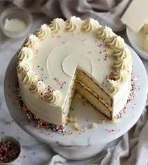

My Vanilla Cake Recipe
This simple vanilla cake is soft,moist and perfect for any occassion
Ingredients
- 1 cup (200g) sugar
- 1/2 cup (115g) unsalted butter
- 2 eggs
- 2 teaspoons vanilla extract
- 1.5 cups (190g) all-purpose flour
- 1.75 teaspoons baking powder
- 1/2 cup (120ml) milk
- Pinch of salt
Description
- Preheat oven to 175°C. Grease and flour a 9-inch round cake pan.
- In a bowl, cream together the sugar and butter until smooth.
- Beat in the eggs one at a time, then stir in the vanilla extract.
- In another bowl, combine the flour, baking powder, and salt.
- Gradually add the dry ingredients to the wet mixture, alternating with the milk. Mix until well combined.
- Pour batter into the prepared pan and smooth the top.
- Bake for 30-35 minutes or until a toothpick inserted in the center comes out clean.
- Let the cake cool before removing from the pan. Serve plain or with your favorite frosting.
Vanilla Cake
